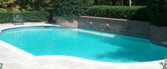

Jupiter Pool Cleaners maintenance is essential because regular pool maintenance is required to make sure that expensive repairs don't come up. Although a pool repair will be necessary at some point, regular maintenance can help pool owners avoid the need for them more often than necessary. If you're in the Jupiter area, our pool maintenance service is here for you. Jupiter Pool Cleaners Service is rated among the highest in the industry.
Jupiter Pool Cleaners will do extensive water testing often enough to make sure that water is always safe for swimmers and there is the correct amount of chemicals. Chemical testing kits are also available for to purchase if you would like to do it yourself. If levels get low you can call us to come over and add the correct chemicals. However, this likely won't be necessary as we are very proactive when it comes to chemicals and a customer's pool. We make sure that chemicals provide a safe swimming experience but also don't allow the chemicals to bother swimmer's eyes or skin.
If dirt and debris is allowed to stay in pools for an extended period of time it can result in damage to a pool. Pool maintenance from Jupiter Pools service protects pools from these invasive materials. We'll keep your pool clean by providing a service of regular vacuuming. Our Hammerhead vacuum cleaners are the best in the industry and you cannot get the same quality vacuum job with those cleaners that you buy and leave in your pool. Sometimes pool owners can tell they need vacuuming when their pool has a slippery floor. This is a sign that they need to call their maintenance service. If a pool is not vacuumed for an extended period of time, debris may find its way into a filter. Large debris can destroy a filter. Filters can be expensive to repair or replace. Often it is very difficult and expensive to repair a pool's filter.
Jupiter Pool Cleaners Service will provide you with regular filter cleanings as well. Filters need to be cleaned to ensure they stay working correctly. There are many different types of filters and therefore even more ways to clean filters. Our pool maintanence technicians are certified to handle every filter type. They understand that cleaning some pool filters can be dangerous. DE filters require many complicated steps and skipping one or another could result in electrical shock or even an explosion. Most filters come with warnings that should be abide and read before cleaning.
Our Jupiter pool maintenance will also provide for you a regular season shock treatment. Shock treatment is the process of super chlorinating a pool. Normally as much as five times the normal amount of chlorine is added to a pool to shock it. This shock treatment is necessary at least once every season and also whenever a pool becomes very cloudy or dirty due to an excess of dirt and/or algae. Regular pool maintenance can protect pool owner's from an excessive need for shock treatments however, they are still going to need this treatment at least once a season.
Tiles are where they are due to the dirt and oils that float along the top of a pool. These floating dirt and oils can stain the material under a tile but tile is easily cleaned therefore it is put where it is. Regular pool maintenance provides pool owners with the services they require to make sure their tile is always clean. Dirty tile leads to a dirty, unsafe pool. Dirt and oils in a pool can clog filters and can also lead to the need for a shock treatment. Therefore they should be avoided.
Regular pool maintenance Jupiter provides pool owners with a service that allows pool owners to avoid expensive repairs. When a pool is left to crack, damage or fill with algae it may become unusable. The result is expensive repairs. Pool owners should avoid these practices and instead allow a service to handle their pool maintenance. Busy pool owners may forget all the things a pool needs in order to function properly but regular pool maintenance isn't.
Consider the high cost of replacing things like bond beams, re-caulking, replacing a pool filter and more. These repairs are very expensive and most can be avoided. With regular pool maintenance a customer can expect a pool clean and free from dangerous pathogens, proper amounts of chemicals and proper functioning and operation. The added benefit is avoiding the stress and hassle or doing it yourself by hiring Jupiter Pool Cleaners.
Call Jupiter Pool Cleaners today!
561-203-1900